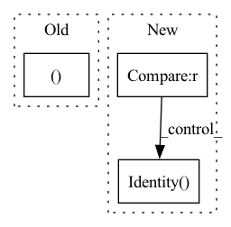

Pattern ID :28217

Before Change
def init_embedder(self):
Creates positional embedding functions for the position and view direction.
self.pos_embedder, self.pos_embed_dim = get_positional_embedder(self.pos_multires,
self.embedder_type == "positional")
self.view_embedder, self.view_embed_dim = get_positional_embedder(self.view_multires,
self.embedder_type == "positional")
After Change
if embedder_type == "none":
embedder, embed_dim = None, 0
elif embedder_type == "identity":
embedder, embed_dim = torch.nn.Identity(), 0
elif embedder_type == "positional":
embedder, embed_dim = get_positional_embedder(frequencies=frequencies)
else:
In pattern: SUPERPATTERN
Frequency: 4
Non-data size: 3
Instances
Fragment ID: 83364156
Project Name: nvidiagameworks/kaolin-wisp
Commit Name: 688dfebfd03fbfa81560f103244bc7e776e47245
Time: 2022-12-20
Author: 9556101+orperel@users.noreply.github.com
File Name: wisp/models/nefs/nerf.py
M Class Name: NeuralRadianceField
N Class Name: NeuralRadianceField
M Method Name: init_embedder(3)
N Method Name: init_embedder(1)
M Parent Class: BaseNeuralField
N Parent Class: BaseNeuralField
M File Name: wisp/models/nefs/nerf.py
N File Name: wisp/models/nefs/nerf.py
M Start Line: 34
M End Line: 42
N Start Line: 65
N End Line: 76
'>
Before Change
self.context = context
self.mix_base = mix_base
if len(layers)>0 and layers[0]==0:
layers = ()
n = n_in
n += n_in_base*mix_base
After Change
nn.Dropout(p=dropout_rate)
]
n_in = n_out
self.conv = nn.Sequential(*conv) if len(conv) > 0 else nn.Identity()
def forward(self, x): // (B, N, n_in)
B, N, _ = x.shape
'>
Fragment ID: 83364159
Project Name: keio-bioinformatics/mxfold2
Commit Name: 97079ed64ffd5374169c120e85cd38ec4ed21553
Time: 2019-11-30
Author: satoken@bio.keio.ac.jp
File Name: dnnfold/fold/layers.py
M Class Name: CNNUnpairedLayer
N Class Name: CNNUnpairedLayer
M Method Name: __init__(5)
N Method Name: __init__(8)
M Parent Class: nn.Module
N Parent Class: nn.Module
M File Name: dnnfold/fold/layers.py
N File Name: dnnfold/fold/layers.py
M Start Line: 349
M End Line: 368
N Start Line: 123
N End Line: 132
'>
Before Change
def init_embedder(self):
Creates positional embedding functions for the position and view direction.
self.pos_embedder, self.pos_embed_dim = get_positional_embedder(self.pos_multires,
self.embedder_type == "positional")
log.info(f"Position Embed Dim: {self.pos_embed_dim}")
After Change
if embedder_type == "none":
embedder, embed_dim = None, 0
elif embedder_type == "identity":
embedder, embed_dim = torch.nn.Identity(), 0
elif embedder_type == "positional":
embedder, embed_dim = get_positional_embedder(frequencies=frequencies, position_input=position_input)
else:
'>
Fragment ID: 83364166
Project Name: nvidiagameworks/kaolin-wisp
Commit Name: 688dfebfd03fbfa81560f103244bc7e776e47245
Time: 2022-12-20
Author: 9556101+orperel@users.noreply.github.com
File Name: wisp/models/nefs/neural_sdf.py
M Class Name: NeuralSDF
N Class Name: NeuralSDF
M Method Name: init_embedder(4)
N Method Name: init_embedder(1)
M Parent Class: BaseNeuralField
N Parent Class: BaseNeuralField
M File Name: wisp/models/nefs/neural_sdf.py
N File Name: wisp/models/nefs/neural_sdf.py
M Start Line: 103
M End Line: 108
N Start Line: 54
N End Line: 65